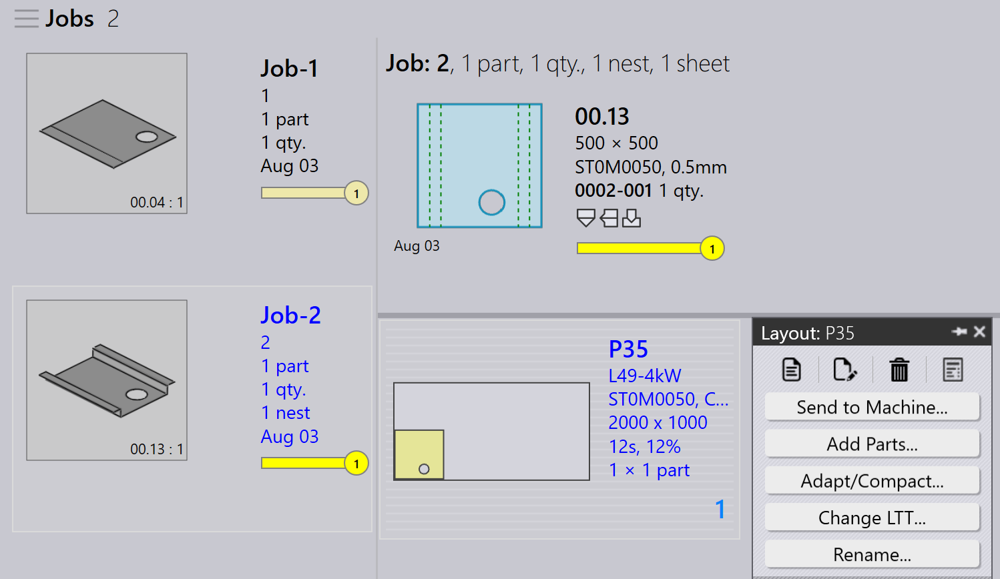

Repacking
TruSmartCAM には別個の Repacking モジュールはありません。代わりに、repacking は、部品の組み合わせ方に柔軟性を持たせるジョブレベルのオプションを通じて処理されます。
repacking を行うには 3 つの方法があります。
-
Mix parts from multiple Jobs による repacking。
-
Add Parts インタラクティブウィザードを使用した手動 repacking。
-
TecZone を使用した手動 repacking。
mix parts from multiple Jobs による repacking
-
このオプションを有効にするには、factory → settings → Job → Nest settings → Mix parts from multiple Jobs に移動します。

-
有効にすると、このオプションにより、自動ネスティングまたはインタラクティブネスティング中に異なるジョブの部品をグループ化でき、結合されたパッキングまたはネスティングが得られます。
-
例:
-
Job-1 に 1 個の部品、Job-2 に 1 個の部品があります。
-
Mix parts from multiple Jobs を有効にすると、TruSmartCAM はこれら 2 個の部品を単一の最適化されたネストに repack できます。
-


-
このオプションがない場合、各ジョブの部品はネスティング/パッキング中に異なるレイアウト名で分離されたままになります。
-
Repacking は、このオプションを有効にせずに手動で実行することもできます。
add parts インタラクティブウィザードを使用した手動 repacking
-
レイアウトビューから、repack する部品を選択します。
-
部品を右クリックし、レイアウトパネルから Add Parts… を選択します。

-
ウィザードのプロンプトに従って、repacking プロセスを完了します。
-
Show other job parts を選択し、現在のジョブに追加します。

-
変更を確認し、repacking を確定します。

詳細については、Add Parts を参照してください。
TecZone を使用した手動 repacking
-
 をクリックして TecZone を開きます。
をクリックして TecZone を開きます。

-
TecZone インターフェイスで、Add をクリックします。

-
repack する部品を選択できる新しいウィンドウが表示されます。Show… をクリックし、Other job parts を選択します。選択後、Pick をクリックします。

-
部品を repack する場所を定義できる新しいウィンドウが表示されます。
-
Save changes to TruSmartCAM をクリックすると、repack されたレイアウトが TruSmartCAM で利用できるようになります。